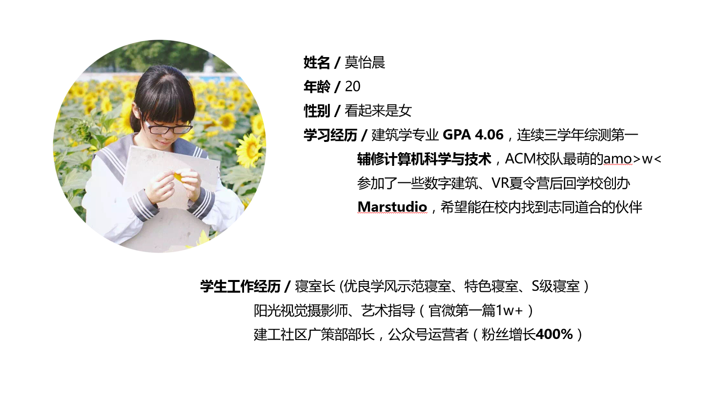
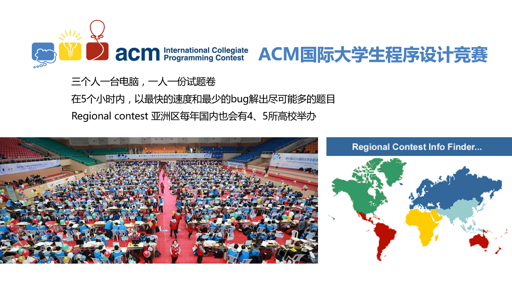
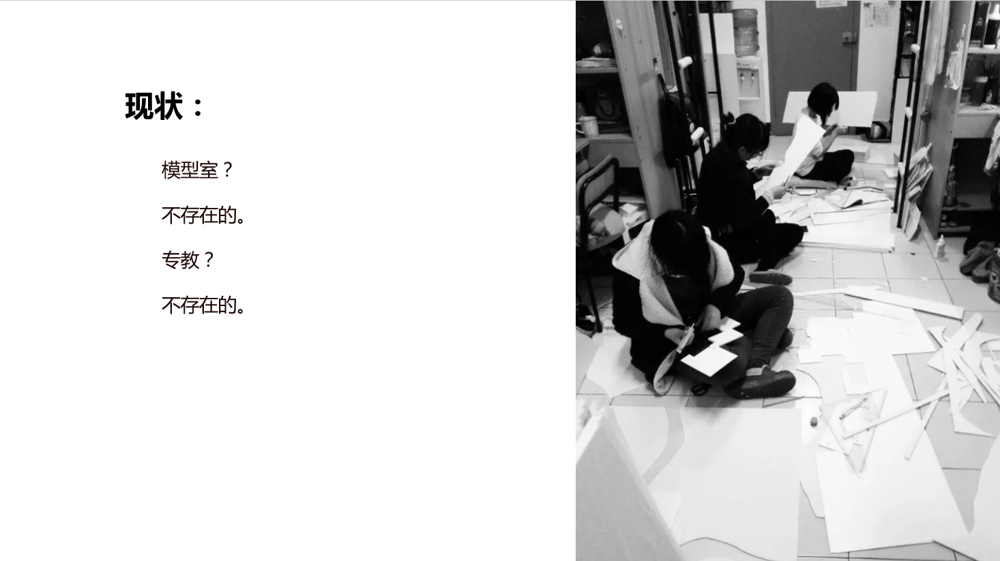
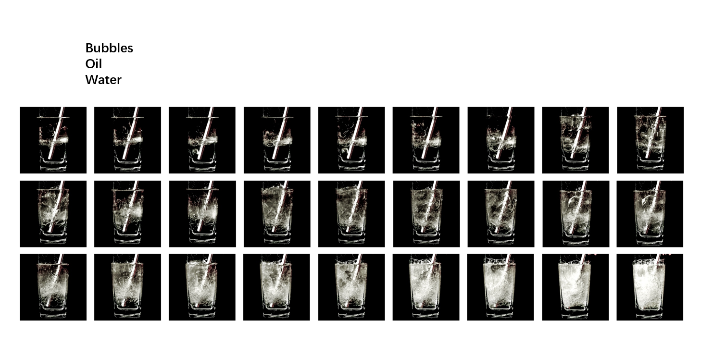
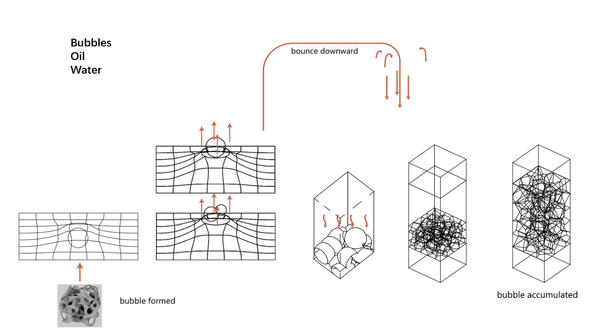
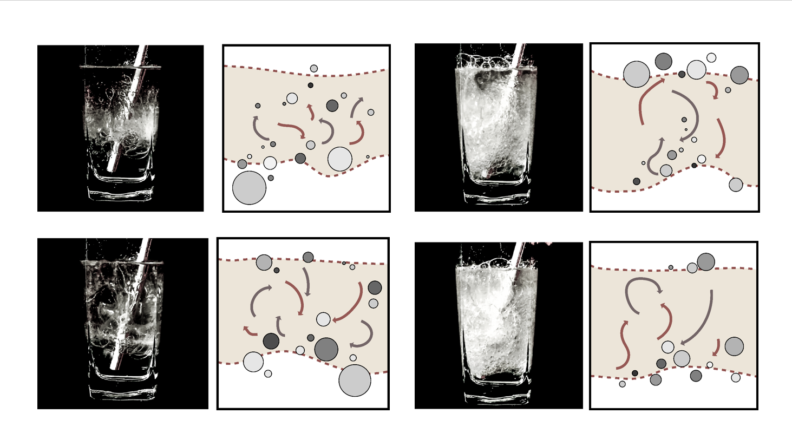
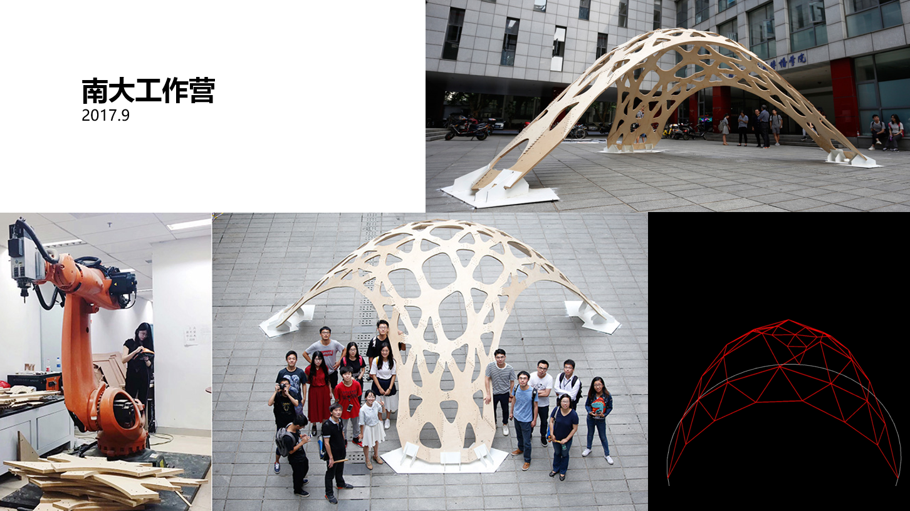
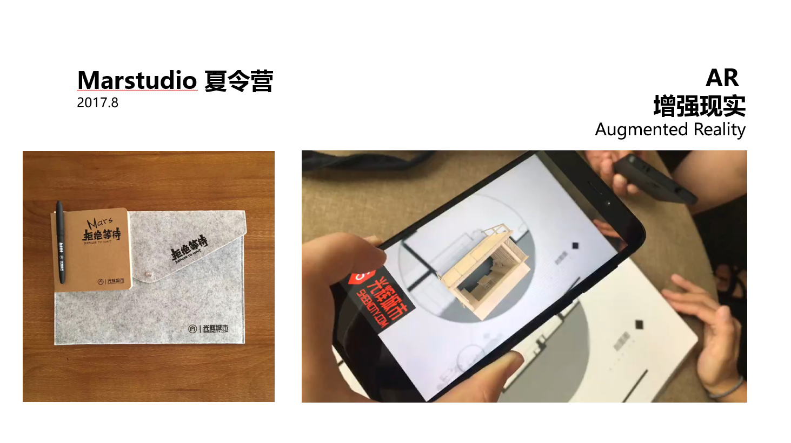
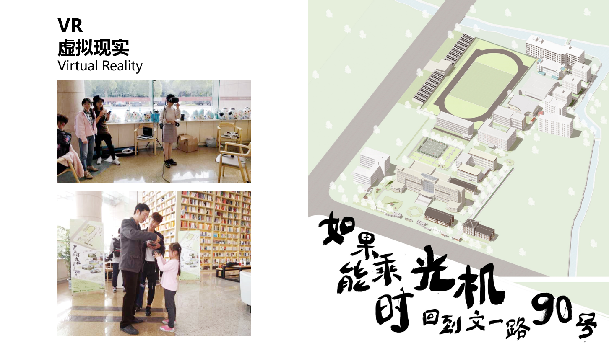

强行要求交5000字的讲稿有些爆炸:boom:（对不起我是没有故事的女同学
整理了大学以来一部分经历，顺便测试图片功能。
Table of Contents
自我介绍
亲爱的老师，同学们，我是来自建筑学的学生莫怡晨。
今天想借自己个人的学习经历，和大家分享一下我作为一个建筑学生在浙理，三年半来的一些经历。
首先是惯例做个简单的自我介绍。

目前是建筑学大四，大学完成度70%，目前正在同时辅修计算机科学与技术，没错也是我校ACM校队最萌>w<的那一个。
今年暑假参加了一些数字建筑的夏令营，这学期创办了Marstudio。
此外，大一大二作为媒体人和摄影记者在分别在阳光视觉、建工社区做过学生工作，现在仍然是寝室长，曾经有一学期整个寝室综测/绩点都在年级前10名（很骄傲了。
ACM不解之缘
通过概述，相信大家对我也有了一点基础的印象，所以很多人会开始奇怪建筑学，几乎是艺术生一样的专业，怎么跑去学计算机了呢。
这起因于大一入学不久，和ACM结下的不解之缘。当时，参加完校运会，几乎已经几乎错过了队员招募的时间节点。学了2周C语言的我，在ACM新生赛中运气爆棚，拿到了最佳女生，当时奖品是粉嫩嫩的一堆娃娃，于是一时兴起加入了ACM队，当然结果是被虐得体无完肤，抖M属性让我在算法竞赛的道路上一路走到黑。
另一个原因是，建筑学专业平时没什么机会做数学题，日常接触几乎只有最简单的加减法，对打小喜欢数学的我来说，解ACM的题非常有趣，（或许还有避免老年痴呆的好处。纵观自己的大学生涯，可以说ACM是改变了我的人生观这样的存在，也是在它的影响之下，我开始了不断挑战，屡败屡战，愈战愈勇的大学生活。
所以我今天的分享，也从介绍这个竞赛开始。
ACM国际大学生程序设计竞赛，在亚洲区每年会有5~6个赛区，一场比赛时长5个小时，一共13道题，每个学校可派出2到3个队伍，一个队伍3名选手，选手要在5个小时内，以最少的错误，最快的速度通过尽可能多的题目。

每道题目会有1到3页的英文描述，以及输入输出的样例，题面内容一般比较丰富，有些会比较有故事性，也有些就只有数学描述。通常拿到题目在仔细阅读之后，能大致确定这是个什么类型的题，比如动态规划，数据结构，字符串，几何，图论，数论，脑子题，然后确定可以在这个类型下想到符合题目数据运行要求的算法（这也是受限于计算机每秒1e9的运算速度限制）。
很多人认为这个竞赛是一个智力游戏，在这个领域的高手都是怪咖。但其实，从零基础到拿到银牌，像我这样的普通学生也只要努力就可以了。学习内容非常有逻辑，每一个学习ACM算法的人，都可以看到自己的成长，在不断练习中，渐渐培养起来自信心，有助于在比赛中更快更好地想出答案。此外，还有国内衍生出来的中国大学生程序设计竞赛，也是类似的比赛规则。11月初在我校顺利举办了中国大学生程序竞赛的杭州站。我也在其中当了比赛裁判，并作为志愿者送了气球。仔细想想确实一直深深地热爱着这个比赛啊。坐着绿皮火车征战全国各地，积攒了如山一般的参赛证，每次在比赛的开幕式，闭幕式上听到诸如“你们是中国计算机领域的未来”这样的话，都会几分感慨。
如果有小伙伴想参与这个竞赛，我在这边也整理了学习方法，适用于零基础的大家。
首先是加入我校的ACM群，里面有学长学姐提供了超全的入门方法
然后是推荐书《挑战程序设计竞赛》《算法竞赛入门经典训练指南》这些书上有大量的习题，然后去OJ上练习，有任何不懂的就在群里提问。
辅修计算机
可是我毕竟是一个建筑学生，虽然和队友交流算法很快乐，虽然和班里同学聊设计也很快乐，但是经常会有一种分裂感，更多时候是陷入深深的孤独中。虽然从来不曾怀疑自己是不是入了歧途，但也时常，对于“算法怎么用在建筑设计上”这件事，而感到困扰。诚然，训练ACM对我做建筑设计的逻辑，有着潜移默化的作用，但，和我所想代码能实现的，还是不一样。
所以有一天我仔细审视了自己的喜好，剖析遇到的困扰，觉得是对计算机技术所知甚少，才会有这样疑虑和忧愁。所以当时虽然已经是大二快结束了，我 毅然选择了辅修计算机科学与技术。
这里可能要给大家解释一下为什么是“毅然”。
建筑学和计算机科学与技术，不管在哪个国家哪所大学，都是“熬夜最多，头发最少”的专业，所以当时我也是郑重考虑过之后，决定牺牲一下发际线。
辅修，是什么样的醍醐味？
决定辅修之后，我仔细研究了学校公开的各种关于辅修的文件，得到这样一些结论：
- 辅修达到学分要求授予辅修专业学士学位证书（也就是说花61 75 = 4575RMB学习辅修专业的所有专业必修课和*选修课）
- 辅修专业总学分达30学分及以上者学校发给辅修专业学习证，30学分以下者该课程按通识选修课记入学生主修专业成绩单。
- 辅修成绩不影响综合测评成绩
- 辅修成绩不影响推免计分
再谈谈对辅修的感受。虽然辅修成绩不会影响综测，但是我目前的学习状态来看，辅修是占用了很大的时间和精力的，所以还是会对主修专业有一定影响。这可能和我大三才开始辅修，并且抱着修完所有学分拿到辅修专业学士学位证书这样的目的有关。
但是挖掘深层次的原因，是我对跨学科产生的极大兴趣。在这学期的作业中，我经常在计算机的课程设计/作业中加入建筑的元素，也会在建筑学写的各种报告中普及前沿的计算机知识，分享一些研究性质的应用。
然后在我校，我所修的计算机科学与技术，是“跟班上课”的制度，也就是说，我和所有主修计算机的学生一样，几乎上一样多的课，做一样多的作业，这是很大的挑战，特别是在选课先后顺序的抉择上。但同时，这也给了我和计算机的同学交流的机会，借着这样的机会，在上课的班里认识了非常多努力而上进的朋友。
虽然大学的课堂并不是开放到让我满意的地步，但是在课堂上和老师、同学想法的碰撞，不同思路下的交流总是开心的事情，在交流的过程中加深对知识点的理解，一定要比自学要有意思的多。此外，随着学习的深入，我也发现不同领域随着知识积累的不同，对现象的思考，甚至观察事物的层次也会渐渐不一样。花时间去学习新的知识，新的技能，都不会浪费时间，可能就在某天某个机遇下，就会发现自己学过看起来无用的东西，有用。
图书馆提供了丰富的图书资源，良好的学习环境。希望大家都能把握宝贵的学习机会，莫负青春好时光。
建筑学
我在和外校同学交流的过程中发现，他们首先会震惊于“居然可以辅修计算机！”，然后会震惊于“居然没有模型室！”、“居然没有专教！”。建筑学没有专教，没有模型室应该在任何地方都是一件奇怪的事情吧！新来的老师也会问起诸如“模型室在什么地方？”、“专教在什么地方？”这样的问题。
但是，敲黑板划重点，这并不影响我们熬夜掉！头！发！！
但是今天我在这里不打算讲学建筑多累多苦逼，因为为建筑付出精力付出热情我心甘情愿。困扰我的是，在条件受限下，热情和心甘情愿无处可挥洒。

在学习建筑学的过程中，我渐渐发现我们这个并不算古老的学科，在近20年的互联网潮流中，几乎是停滞的。虽然表观上，设计阶段的图纸几乎电子化了，交互方式也从手绘到电脑制作，再到现在在VR驱动下有了三维的交互方式。在建筑理论上，仍然是承袭百年前的工业革命冲击带来的现代主义建筑的流派。唯有一支略显非主流的数字建筑到后数字建筑在不断向新的技术、新的材料发出挑战。我曾经希冀在学校做探索、做尝试，但是，没有模型室、没有专教，再加上没有课题，这些探索尝试意味着几乎是不可能的事。
选择建筑学专业，这可能是我这辈子做过最酷的决定。但是我不能，也不愿意，被局限在这样小的鱼缸里。去外面看看的方式有很多种，我的选择是去参加夏令营。在夏令营里可以接触到其他学校的在教学研究上的探索，接触到来自全国各地志同道合的同学老师，虽然报名费高昂，几乎是“花钱买夜熬”的行为，需要自己找住处也有些麻烦，但我想值得。
大概在7月中旬，参加了清华大学的参数化建筑研习班，研习班的日程非常紧张，早晚是两个来自各高校老师和一些先锋事务所的建筑师的大讲座，然后白天安排讲课和presentation，在那边的10天，平均每天睡觉的时间可能不到2小时。每天都接触着自己不大熟悉的工具，深夜回住处复习白天内容，做PPT到快天亮，然后草率地睡一下又回清华。
（建议大家去夏令营不必找住处，买个睡袋带过去比较方便！）
我们当时做的内容是采用了这样的方式，从一个实验出发，观察其实验现象，探索其中的物理原理，将导致物体形态变化的各种无形的力转译为可以在粒子系统中可以描述的力，也就是一个生形的过程。当时用3ds Max 和 rhino/grasshopper中的插件quelea做了两个版本，最后结果呈现是quelea的版本。
我们选择了泡泡实验，为了实验效果，用肥皂液、水、油三者混合的溶剂作为显形的载体，静置之后分为三层。实验过程中向最底层的水中吹入气体，气泡首先由于张力在水中生成，向上的浮力让它首先冲破油液面，之后呈现减速的状态，气泡会在油气面和油液面中震荡。在不断吹入气体的过程中，气泡在油层中堆积，呈现出晶莹剔透的样子。当由于气泡填充，导致油层密度降低，所以开始有气泡在油面表层堆积。

所以我们分析了玻璃杯内的环境，绘制了分析图。并且抽象出了这样一些力，首先是气泡受到浮力，然后是在液体内的阻力，并且模拟出油液面和油气面两个层，同时需要模拟油层在气泡堆积过程中对气泡阻力的减小，在设定好这些力之后，释放出粒子，粒子会在我们建立的环境中因受力而运动，就可以提取其轨迹，或者其他，来生成与实验结果类似的形态。


最后结合场地环境，当时是选择清华建筑馆门口的绿地作为场地，把三面建筑，一面向中央主轴开放的场地与杯子类比。将景观三个层次作为分层结果，分析来自周围建筑的视线，和中央主轴的空间吸引力，对在场地中模拟的粒子套用生成算法，得到建筑形态。
在清华研习班虽然非常辛苦，并没做出自己特别满意的成果，说白了我可能就是比较喜欢写代码吧，而且当时正是ACM暑期集训期间，突然停下不写代码有些不知所措。
参加了清华研习班之后我了解到了今年在南京大学的DADA2017，有我仰慕许久的东南大学的一位老师的课程，于是欣然前往。

Neuron木构结合了运算化设计（Computational Design）和机器人制造技术，在南京大学校园内建成了约7米跨度的新型木质构筑物。构件之间的连接完全由榫卯实现，无需钉子、胶水或螺栓固定。
模型是用Java写的迭代优化算法，生成纯压力薄壳曲面，并结合现场庭院内的人流为构筑物设置了合理的开口位置与大小。整个曲面由61个形似神经元细胞的异形木构件组成。构件的设计充分考虑了力学性能、构造合理性、可加工性、视觉效果等因素。每个构件的“触角”用来传递构件之间的压力，而触角之间形成的孔洞在整个曲面上体现出独特的韵律。
所有木构件的制造都由数控加工完成：先由CNC木工机从25mm桦木胶合板上切割出构件的轮廓，再由Kuka六轴机器人完成每个构件“触角”处的榫卯加工。全新的榫卯构造设计，一方面确保了连接的有效性和便捷性，另一方面充分结合了机器人铣削加工的特性。设计团队用Java程序输出木工机的G-code代码和Kuka机器人的KRL代码，并发布了http://javakuka.com开源代码库，完全实现了机器人运动编程的自主化。
Neuron木构的建成体现了数字化设计与智能制造相结合的优势，预示着建筑设计智能化和建造智能化的未来。该项目从头至尾无需任何图纸，而是构建了从形态设计、结构优化、构筑设计到加工建造的数字化链条。
题外话这学期自从发现自己其实可以读计算机的研究生之后，感觉人生开阔了很多（雾
最后来介绍一下我校建筑协会所隐藏的神秘部门，Marstudio。

Marstudio是我和其他学校的同学一起正在搭建的VR在建筑学领域的高校交流平台，计划可以用这种新的三维交互方式做一些建筑实践。所以正值我校120周年庆的时候，我招募了建筑学的几个同学将我校老的文一校区复原，办了一个名为“浙理时光机”的活动。

老校友回到我们这个校区来参与学校的周年庆，和故人相遇，却看不见旧日风景。如果能在浙理搭建出一个空间布景，将老校区还原出来，想必会非常有意思。所以当时正好手上有这个技术，可以把只有建筑相关专业的学生能看懂的图纸，变成大家都能接受的三维VR的形式，展现在校友面前。但是有很多事一个人实现起来太困难了，当时我非常痛苦，跑档案馆找资料，觉得我自己做不出来，所以后来招募了一些人，一个人做不出来的东西，一群人，结果真的做出来了。
从给大家分享图纸，用SU拉模型，到在MARS里面变成VR，再到做出二维码，一起断断续续花了3周时间，就做完了，其实当时也是很赶，一边面临着校庆这个“错过再等10年的”deadline，一边东西还没有做出来，场地还没找，设备还没到，很幸运的是在推进的过程中，问题也一个一个解决了。在校庆当日，在大剧院和学生活动中心设置了活动场地，申请了两台HTC vive，给所有人免费体验，还有简易版的VR盒子，把我们做的二维码里的场景变成三维，给一些不愿意戴头盔的校友体验。
有过这样一次把自己的想法推进，最后实现的经历，对我来说意义非常重大，十分感谢老师、朋友们的帮助。
非常幸运，听说学院建院以来，第一次把国奖名额给了非毕业班的我。
很荣幸今天大家坐在下面，听我絮絮叨叨讲了这么多自己学习的经历。我觉得受挫折是很有意思的事情，所以很少在“畏畏缩缩不敢往前走”这件事上花时间，可能只是有点蠢吧。
谢谢大家。